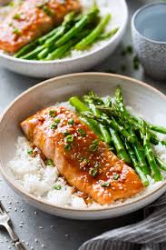

Teriyaki Salmon

Description
Indulge in a teriyaki salmon recipe where tender salmon fillets are marinated in a rich blend of sesame oil, lemon juice, soy sauce, brown sugar, and spices, then perfectly glazed and topped with crunchy sesame seeds. This flavorful dish combines savory, sweet, and tangy notes for a delightful and balanced meal.
Ingredients
- Sesame Oil
- Lemon Juice
- Soy Sauce
- Brown Sugar
- Sesame Seeds
- Spices
- Salmon
Steps
- Make the marinade on the stove, then set aside 1/4 cup for basting.
- Marinate the salmon in zip-top bags in the refrigerator for up to two hours
- Broil the salmon into it flakes easily, brushing with the reserved marinade as-needed